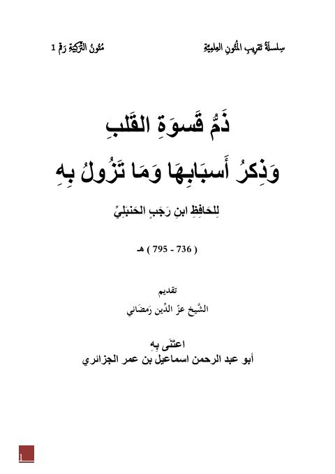

Downloads need an internet connection.
ذم قسوة القلب وذكر أسبابها وما تزول به لابن رجب
Authors: ابن رجب الحنبلي
Publishers: إسماعيل بن عمر الجزائري
**▫️ العنوان: ذم قسوة القلب وذكر أسبابها وما تزول به لابن رجب** ▪️ المؤلف: #عبد_الرحمن_بن_أحمد_بن_رجب_الحنبلي ▫️ الناشر: #إسماعيل_بن_عمر_الجزائري ▪️ الطبعة: 1 ▫️ عدد الأجزاء: 1 ▪️ الصفحات: 50 ▫️ نوع الوعاء: #كتاب ▪️ التصنيف الرئيسي: #الزهد_والرقائق ۪